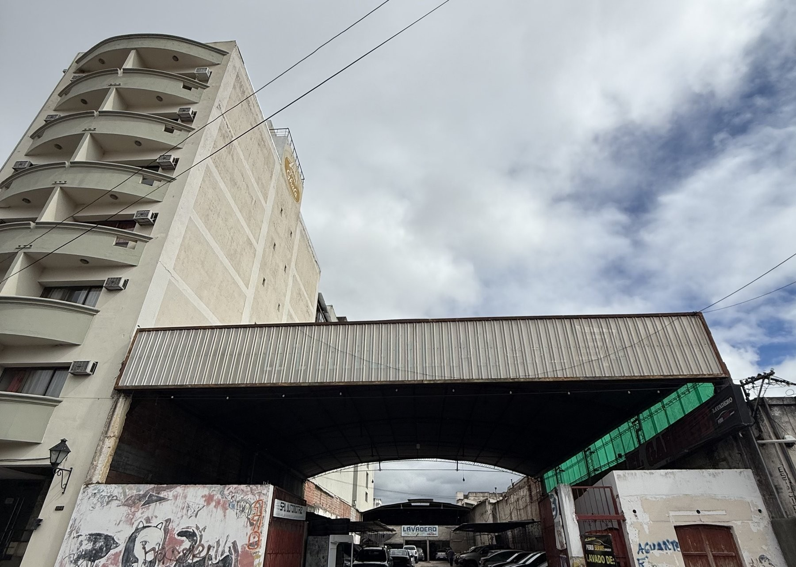
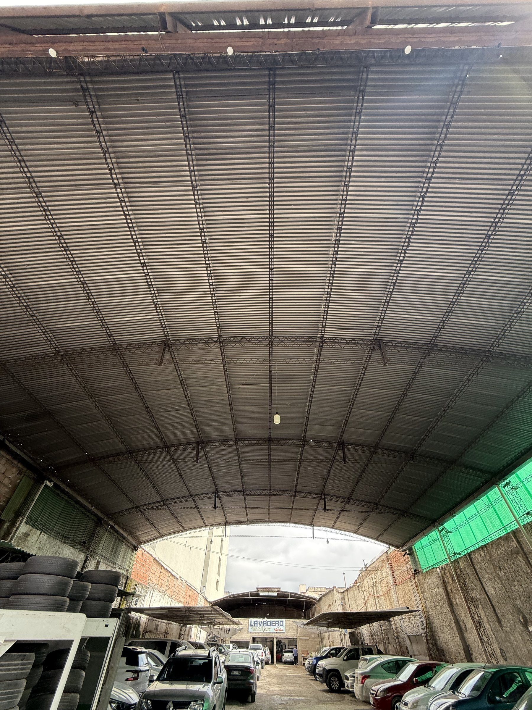
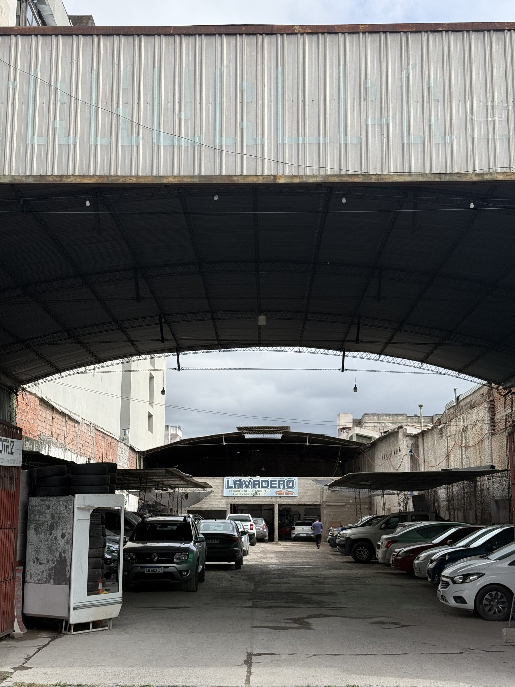
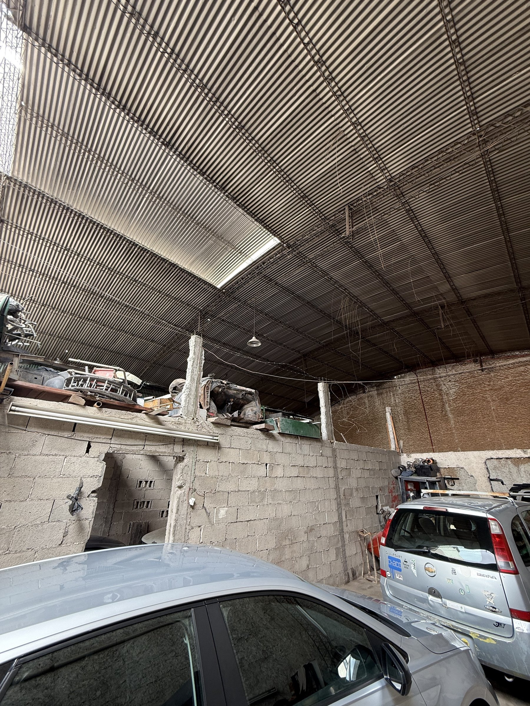

Lote urbano de 1.396,92 m² sobre calle H. de Lerma, en pleno microcentro de Salta Capital, con buen nivel de tránsito y acceso directo al casco céntrico.
Las construcciones existentes en el predio —un tinglado parabólico y edificaciones menores— presentan un estado de deterioro y no condicionan el desarrollo: el valor del activo está en la tierra y en su capacidad constructiva. La normativa vigente habilita una superficie vendible de hasta 4.100 m², equivalente a un factor de ocupación total aproximado de 2,9 veces la superficie del terreno.
| Ubicación | Calle H. de Lerma N° 178, microcentro, Salta Capital |
| Superficie del terreno | 1.396,92 m² |
| Frente / Fondo | 17,14 m / 74,60 m |
| Superficie vendible a desarrollar | Hasta 4.100 m² (FOT aprox. 2,9x) |
| Estado actual | Tinglado parabólico y construcciones menores, deterioradas — sin valor incremental |
| Amenities | No aplica — lote a desarrollar |


